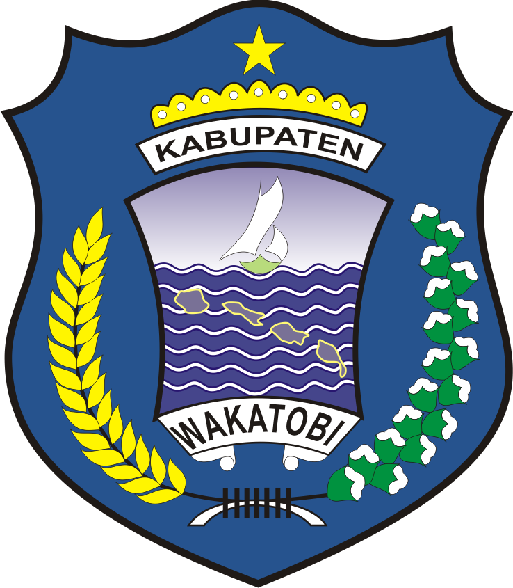

Pemerintah Kabupaten Wakatobi
Dinas Koperasi, Usaha Kecil Menengah dan Tenaga Kerja
Bidang Koperasi/Kelembagaan membina tata kelola dan legalitas koperasi di Kabupaten Wakatobi, mulai dari pendirian, pengesahan badan hukum, hingga pengawasan kelembagaan koperasi aktif di seluruh kecamatan. Daftar layanan pada halaman ini sedang disusun.
Layanan Bidang Koperasi/Kelembagaan
Halaman ini akan diperbarui begitu daftar layanan resmi Bidang Koperasi/Kelembagaan ditetapkan.
Kami sedang menyusun kerangka jenis pelayanan yang akan disediakan oleh Bidang Koperasi/Kelembagaan. Setiap layanan yang aktif akan tampil di sini lengkap dengan formulir daring dan persyaratannya.
⏳ Dalam PenyusunanSambil menunggu layanan daring tersedia, hubungi admin melalui WhatsApp di 0821-9746-2749 untuk konsultasi seputar kelembagaan koperasi Anda.